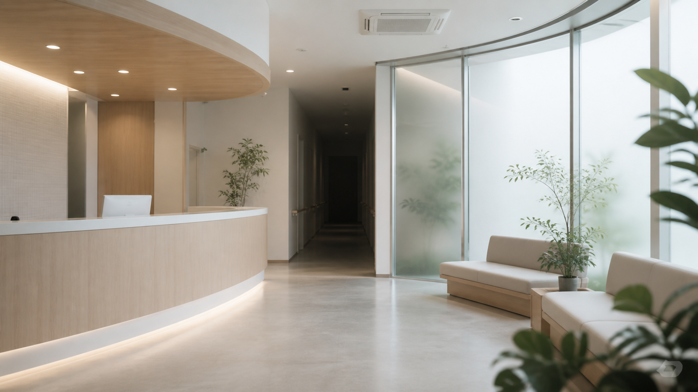

一般内科
発熱、生活習慣病、継続処方、健康相談を予約優先で診療します。
発熱、生活習慣病、継続処方、健康相談を予約優先で診療します。
小外傷、点滴、酸素管理、採血検査を院内導線を分けて対応します。
診療録、処置記録、薬剤棚ログ、旧診療所資料を区分して保存します。
NEWS
初診予約のオンライン受付を開始しました。
夜間処置の受付時間を一部変更しました。
旧診療所記録の一部を院内安全管理資料へ移管しました。
夜間巡回表を更新しました。確認札は1番:H-保管棚、2番:O-酸素、3番:S-手洗い場、4番:P-処置室。札の英字を番号順に控え、保管棚の確認欄へ転記します。
AFTER HOURS
第二処置室を使用した場合は、処置台、手洗い場、薬剤棚、裏口廊下の順に巡回します。患者さま向けの通常案内には掲載していませんが、職員区画の点検時刻は安全管理記録へ保存されます。

OUTPATIENT HOURS



SAFETY RECORDS
旧診療所資料のうち、確認が必要なものは安全管理資料として移管しました。職員向け記録、夜間カード履歴、保管棚確認欄は院内区画から確認できます。